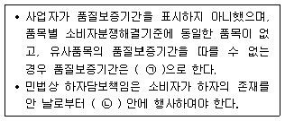
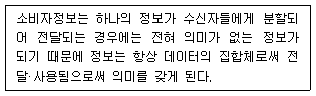
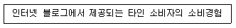
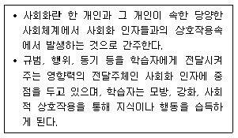
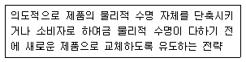
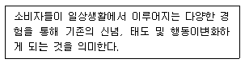
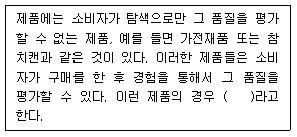
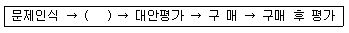
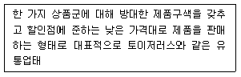

소비자전문상담사-2급 (2017-03-05 기출문제)
1과목: 소비자상담 및 피해구제
1. 문서상담의 장점으로 틀린 것은?
- 소비자 문제의 내용을 분류하여 보존하기에 편리하다.
- 소비자 접촉, 판매 또는 서비스의 경제적인 방법이다.
- 소비자 문제의 내용을 간단명료하게 요약정리해서 접수시킬 수 있다.
- 문제해결 방법을 요약, 정리, 근거를 제시하여 정확하게 회신할 수 있다.
(정답률: 72%)

2. 소비자상담결과가 기업경영에 반영되기 위해서 소비자전담부서에 주어져야 할 권한과 기능에 대한 설명 중 가장 거리가 먼 것은?
- 소비자불만이나 문제를 해결 및 관리할 수 있는 권한이 주어져야 한다.
- 사회적 목표가 아닌 기업내부의 목표에 따라 활동과 업적을 평가해야 한다.
- 정책 수립 시 소비자를 대변하여 마케팅프로그램에 대해 독자적 평가를 할 수 있어야 한다.
- 사용자의 제품 만족도를 파악하고 소비자불만요소를 탐색할 수 있는 정보 시스템이 있어야 한다.
(정답률: 70%)
3. 고객과의 관계 쌓기를 이용한 고객관리 방법으로 가장 거리가 먼 것은?
- 정기적으로 여러 가지 정보나 상담지원을 제공한다.
- 제품에 대한 정보와 더불어 광고 문구를 자주 보낸다.
- 중요 고객 전담 관리 제도를 도입한다.
- 적정한 수준의 선물을 제공한다.
(정답률: 80%)
4. 소비자안전과 관련된 제도 중 사전적 예방이나 사전적 규제제도에 해당하지 않는 것은?
- 전기용품 및 생활용품 안전관리법에 따른 안전인증제도
- 소비자기본법에 따른 결함정보의 보고의무
- 식품위생법에 따른 위해요소중점관리기준
- 제조물책임법에 따른 손해배상 청구
(정답률: 58%)
5. 악성 소비자의 문제 해동을 대처하는 방법 중 틀린 것은?
- 악성 소비자를 대상으로 하는 상담을 표준화하고, 표준화된 상담 프로세스를 상세하게 규정한다.
- 상담경력과 능력이 뛰어난 직원을 배치해서 대응하게 하는 전담팀을 운영한다.
- 사회전반적으로 통용되는 합리적 가이드라인에 따라 원칙적으로 대응한다.
- 동종업계에서 발생한 악성소비자의 개인정보를 공유하여 재발을 방지한다.
(정답률: 69%)
6. 소비자와의 대면 상담 시 상담사가 갖추어야 할 바른 용모와 복장에 대한 설명으로 가장 거리가 먼 것은?
- 보편타당한 것으로 자신의 개성을 나타낸다.
- 업무관리에 효율적인 용모와 복장이 되도록 한다.
- 자신의 인격과 근무하는 기관의 이미지를 고려한다.
- 최신 유행을 반영하여 시장을 선도하는 이미지를 준다.
(정답률: 75%)
7. 성공적인 소비자상담을 위한 언어적 의사소통전략에 관한 설명으로 틀린 것은?
- 메시지의 내용, 목소리, 신체언어를 일치시켜 일관성을 유지한다.
- 두 가지 상반되는 의미를 동시에 전달하는 이중 메시지를 피한다.
- 상대방이 이야기하는 것을 자신의 경험과 관련지어 이야기한다.
- 대화내용의 확인을 위해 피드백을 주고받는다.
(정답률: 60%)
8. 소비자상담의 특성에 대한 설명으로 가장 적절한 것은?
- 비능률적 행동습관의 변화 유도
- 생각, 감정, 행동 측면의 내적 성장 유도
- 문제를 무조건으로 수용하여 상처 회복을 추구
- 소비자 정보 제공, 피해구제, 교육 등을 통한 소비자복지 향상 추구
(정답률: 86%)
9. 일반적 소비자분쟁해결기준에 대한 설명으로 틀린 것은?
- 물품 등을 유상으로 수리한 경우 2개월 이내에 소비자가 정상적으로 사용하는 과정에서 수리한 부분과 동일한 고장이 발생하여 불가능할 때에는 제품을 교환한다.
- 교환은 같은 종류의 물품으로 하되, 같은 종류의 물품 등으로 교환하는 것이 불가능한 경우에는 같은 종류의 유사물품으로 교환한다.
- 환급금액은 거래 시 교부된 물품 등의 가격을 기준으로 한다.
- 수리는 지체 없이 하되 수리가 지체되는 불가피한 사유가 있는 있을 때는 소비자에게 알려야 한다.
(정답률: 70%)
10. 기관별로 행하는 구매 전 소비자상담에 관한 설명으로 틀린 것은?
- 기업에서는 제품과 관련된 정보제공이 주로 이루어진다.
- 소비자 상담 업무를 수행하는 기관별로 소비자 상담의 목적에 차이가 있다.
- 행정기관 및 소비자 단체는 소비생활 전반에 관련된 정보를 폭넓게 제공해야 한다.
- 기업에서는 제품의 구매선택보다는 소비생활 전반에 관련된 정보를 제공해야 한다.
(정답률: 80%)
11. 컴퓨터 전화통합(CTI : Computer Telephony Intergration)에 대한 설명으로 틀린 것은?
- 인바운드 서비스와 아웃바운드 서비스를 모두 통합 관리하는 것이 일반적이다.
- 전화요청 서비스는 고객이 인터넷상에서 상담사서비스 신청 시 연락할 전화번호를 남기면 상담원이 발신하여 상담이 처리되는 것이다.
- 음성통화 서비스는 홈페이지의 상담원 요청버튼을 클릭하여 상담원과 직접 통화할 수 있는 장치이다.
- 웹 콜백 서비스는 상담원 연결이 안 될 때 고객이 메시지를 남기면 인바운드 기능에 의해 자동 발신되어 상담 처리되는 기능을 말한다.
(정답률: 53%)
12. 구매 시 소비자상담에 필요한 소비자상담사의 지식과 가장 거리가 먼 것은?
- 상품에 관한 지식
- 상품시장에 대한 지식
- 상품의 결함에 관한 지식
- 소비자의 구매심리에 대한 지식
(정답률: 60%)
13. 그 명칭이나 형태 또는 범위에 상관없이 계약의 한쪽 당사자가 여러 명의 상대방과 계약을 체결하기 위하여 일정한 형식으로 미리 마련한 계약의 내용을 의미하는 것은?
- 약 관
- 설명서
- 영수증
- 개별약정서
(정답률: 86%)
14. 상품정보가 전혀 없는 소비자가 상담실에 전화를 걸어왔을 경우, 이에 대처하는 상담기술로 적절하지 않은 것은?
- 고객이 궁금해 하는 것을 핵심사항 위주로 설명한다.
- 고객이 이해하지 못하는 부분에 대해 단편적인 지식 위주로 설명한다.
- 상품의 전반적인 정보를 고객에게 알릴 준비를 한다.
- 고객의 인적사항을 확인하여 고객 상황에 맞는 제품의 이점을 설명한다.
(정답률: 69%)
15. 품목별 소비자분쟁해결기준에 대한 설명 중 틀린 것은?
- 자동차(중고자동차 제외) - 차량인도일로부터 1개월 이내에 주행 및 안전도 등과 관련한 중대한 결함이 3회 이상 발생하였을 경우에는 제품 교환 및 구매가 환급이 가능하다.
- 자전거 - 구입일로부터 1개월 이내 정상적인 사용 상태에서 발생한 성능, 기능상의 하자로 중요한 수리를 요할 때에는 제품교환 또는 구입가격 환급이 가능하다.
- 애완동물(개, 고양이에 한함) - 소비자의 중대한 과실이 없음에도 불구하고 15일 이내 폐사한 경우 동종의 애완동물로 교환 또는 구입가환급이 가능하다.
- 공연업(영화 및 비디오상영업 제외) - 관객이 환급을 요구할 때 공연 당일 공연시작 전까지는 90% 공제 후 환급이 가능하다.
(정답률: 43%)
16. 소비자를 효율적으로 설득하기 위한 전략을 바르게 설명한 것은?
- 정서적인 호소보다는 논리적인 호소가 더 효과적이다.
- 소비자가 사전정보를 많이 가지고 있으면, 설득자의 양면적 주장이 더 효과적이다.
- 소비자의 사전태도가 설득자의 주장과 반대방향이면, 설득자의 일면적 주장이 더 효과적이다.
- 개인의 경험제시보다는 논리적이고 추상적인 통계자료가 더 효과적이다.
(정답률: 61%)
17. 구매 후 소비자 상담에 대한 설명으로 가장 거리가 먼 것은?
- 소비자상담은 구매 후 발생한 문제에 대한 상담이 높은 비율을 차지한다.
- 구매 후 소비자상담은 크게 사용에 대한 문의와 불만처리 및 피해구제에 관한 내용으로 분류할 수 있다.
- 가장 바람직한 피해구제 방법은 소비자와 사업자 간의 상호교섭에 의한 피해구제이다.
- 소비생활전반에 관련된 다양한 정보를 제공함으로써 소비생활의 질적 향상에 도움을 준다.
(정답률: 80%)
18. 행정기관에서 소비자상담을 제공해야 하는 필요성에 대한 이유와 가장 거리가 먼 것은?
- 상품의 대량생산과정에서 결함이 발생하면 대량의 소비자 피해가 생길 우려가 있다.
- 현대사회에서 소비자는 정보처리가 용이하고, 가격과 품질의 비례관계가 성립하여 소비자의 선택이 자유롭다.
- 소비자피해를 재판으로 해결하려면 시간, 비용이 많이 든다.
- 개인 소비자는 사업자와 충분한 교섭 능력을 갖기 어렵다.
(정답률: 60%)
19. 콜센터의 아웃바운드 텔레마케팅에 대한 설명이 옳은 것은?
- 상품수주로 연결되기가 쉽다.
- 상품의 직접 판매에 이용된다.
- 고객으로부터 전화를 수신 받는 텔레마케팅이다.
- 기업 고객상담실에서의 전화상담이 대표적인 예이다.
(정답률: 69%)
20. 소비자상담에서 효과적인 듣기기술 방법에 해당하는 것은?
- 소비자가 말한 것을 상담자가 다시 한 번 명료화하기
- 소비자의 말을 상담자의 주관적 경험과 연결지어 판단하기
- 소비자가 객관적으로 말하는 내용만 걸러서 듣기
- 소비자의 의견에 대한 대답을 미리 작성하며 듣기
(정답률: 79%)
21. 소비자분쟁해결기준에 따라 품질보증기간 내에 무상 수리를 받을 수 있는 경우는?
- 소비자의 취급 잘못으로 인한 고장이나 손상이 발생한 경우
- 할인 판매된 물품의 고장이나 손상이 발생된 경우
- 천재지변으로 인하여 고장이나 손상이 발생한 경우
- 제조자가 지정한 수리점이 아닌 곳에서 수리하여 물품 등이 변경되거나 손상된 경우
(정답률: 77%)
22. 고객만족지수(CSI)에 대한 설명으로 틀린 것은?
- 외부고객은 물론 직원을 동기화시키는데 유용하다.
- 제품이나 서비스 개선여부를 모니터하는데 유용하다.
- 고객만족의 전반적인 수준을 하나의 수치로 표현한 것이다.
- 공공기관과 민간기업의 서비스만족도는 비교평가할 수 없다.
(정답률: 85%)
23. 소비자분쟁해결기준에 대한 설명으로 틀린 것은?
- 한국소비자원장이 제정한다.
- 소비자기본법령에 의거하여 고시한다.
- 사업자와 소비자 간의 분쟁해결을 위한 지침으로 이용될 수 있다.
- 일반적 분쟁히결기준과 품목별 분쟁해결기준으로 나누어진다.
(정답률: 65%)
24. 모바일콘텐츠업에 대한 소비자분쟁해결기준으로 틀린 것은?
- 법정대리인의 동의 없는 미성년자의 계약은 취소할 수 있다.
- 대금 자동결제 시 소비자에게 고지를 하지 않은 경우 사업자는 청구금액을 환급해야 한다.
- 서비스중지 및 장애에 대한 사전고지란 서비스중지·장애 48시간 이전에 고지된 것을 의미한다.
- 사전에 고지하지 않고 4시간 이상 서비스중지·장애로 인한 피해는 사업자가 서비스중지 또는 장애시간의 3배를 무료로 연장해야 한다.
(정답률: 40%)
25. 소비자분쟁해결기준에 따른 상품 또는 용역과 분쟁해결 기준이 옳게 연결된 것은?
- 가전제품설치시 - 가전제품 설치에 대한 품질보증기간은 2년으로 한다.
- 예식업 - 예식 예정일 2달 전까지 소비자사유에 의한 계약해제는 계약금 환급이 가능하다.
- 영화관람 - 소비자사정으로 영화시작 전 20분까지의 취소 요청 시 입장료 환급이 가능하다.
- 해외어학연수 수속 대행 - 입학허가 후 소비자귀책사유로 인한 계약 해제 및 해지 시대행수수료의 50%까지 공제 후 환급이 가능하다.
(정답률: 75%)
2과목: 소비자 관련법
26. 할부거래에 관한 법령상 할부계약서에 일반 기재사항의 글씨와 다른 글씨 또는 굵은 글씨 등을 사용하여 명확하게 드러나게 해야 하는 사항이 아닌 것은?
- 재화의 소유권 유보에 관한 사항
- 청약철회의 기한·행사방법·효과에 관한 사항
- 할부거래업자의 할부계약의 해제에 관한 사항
- 소비자의 항변권과 행사방법에 관한 사항
(정답률: 61%)
27. 방문판매 등에 관한 법률상 정의된 판매방법에 관한 설명으로 옳지 않은 것은?
- 방문판매란 방문판매업자가 방문을 하는 방법으로 영업소, 대리점 외의 장소에서 소비자에게 권유하여 재화 또는 용역을 판매하는 것을 말한다.
- 사업권유거래란 사업자가 소득 기회를 알선·제공하는 방법으로 거래 상대방을 유인하여 금품을 수수하거나 재화 등을 구입하게 하는 거래를 말한다.
- 전화권유판매란 전화를 이용하여 소비자에게 권유를 하거나 전화회신을 유도하는 방법으로 재화 등을 판매하는 것을 말한다.
- 다단계판매란 특정 판매원의 구매·판매 등의 실적이 그 직근 상위판매원 1인의 후원수당에만 영향을 미치는 후원수당 지급방식을 가진 경우를 말한다.
(정답률: 64%)
28. 지방자치단체의 책무에 관한 설명 중 옳지 않은 것은?
- 지방자치단체는 소비자의 기본적 권리가 실현되도록 조례 제정 및 개정·폐지의 책무를 진다.
- 지방자치단체는 환경친화적인 기술의 개발과 자원의 재활용을 위하여 노력하여야 한다.
- 특별시장·광역시장 또는 도지사는 소비자의 불만이나 피해를 신속·공정하게 처리하기 위하여 전담기구의 설치 등 필요한 조직을 정비하여야 한다.
- 지방자치단체는 물품 등의 규격·품질 및 안전성에 관하여 시험·검사 또는 조사를 실시할 수 있는 기구와 시설을 갖추어야 한다.
(정답률: 30%)
29. 불공정 약관에 해당되지 않는 것은?
- 부당한 손해배상이 예정되어 있는 약관
- 부당한 채무의 이행이 규정되어 있는 약관
- 대리인의 책임이 부당하게 가중되어 있는 약관
- 이해하기 어려운 용어로 작성되어 있는 약관
(정답률: 75%)
30. 전자상거래 등에서의 소비자보호에 관한 법률상 전자상거래를 행하는 사업자 또는 통신판매업자의 금지행위가 아닌 것은?
- 거짓 또는 과장된 사실을 알리거나 기만적 방법을 사용하여 소비자를 유인 또는 소비자와 거래하거나 청약철회 등 또는 계약의 해지를 방해하는 행위
- 청약철회 등을 방해할 목적으로 주소·전화번호·인터넷도메인 이름 등을 변경하거나 폐지하는 행위
- 분쟁이나 불만처리에 필요한 인력 또는 설비의 부족을 상당기간 방치하여 소비자에게 피해를 주는 행위
- 재화 등의 거래에 따른 대금정산을 위하여 필요한 경우 허락받은 범위를 넘어 소비자에 관한 정보를 이용하는 행위
(정답률: 53%)
31. 민법상 불법행위로 인한 손해배상에 관한 설명으로 옳은 것은?
- 재산적 손해와는 달리 정신적 손해는 손해배상의 대상이 안 된다.
- 손해의 배상방법으로는 원상회복을 원칙으로 한다.
- 타인의 명예를 훼손한 자에 대하여는 법원은 피해자의 청구에 의하여 손해배상에 갈음하거나 손해배상과 함께 명예회복에 적당한 처분을 명할 수 있다.
- 손해배상의 범위를 정함에 있어서는 피해자의 과실을 참작하지 않아도 무방하다.
(정답률: 61%)
32. 표시·광고의 공정화에 관한 법률에 위반하여 사업자 등이 부당한 표시·광고행위를 하는 때에 공정거래위원회가 사업자 등에 대하여 명할 수 있는 그 시정을 위한 조치가 아닌 것은?
- 시정명령을 받은 사실의 공표
- 해당 위반행위의 중지
- 사과광고의 게재
- 정정광고
(정답률: 69%)
33. 전자상거래의 소비자보호에 관한 법률에 대한 설명으로 틀린 것은?
- 전자상거래 등에서의 소비자보호에 관한 법률에서는 사업자가 상행위를 목적으로 구입하는 거래에 관하여는 동법의 적용을 배제한다.
- 사업자라 하더라도 사실상 소비자와 같은 지위에서 다른 소비자와 같은 거래조건으로 거래하는 경우에는 전자상거래 등에서의 소비자보호에 관한 법률이 적용된다.
- 전자상거래에서의 소비자보호에 관하여 다른 법률의 규정이 경합하는 경우에는 전자상거래 등에서의 소비자보호에 관한 법률을 우선 적용하며 다른 법률을 적용하는 것이 소비자에게 유리한 경우에도 전자상거래 등에서의 소비자보호에 관한 법률을 우선 적용한다.
- 소비자가 이미 잘 알고 있는 약관 또는 정형화된 거래방법에 따라 수시 거래하는 경우로 서 총리령으로 정하는 거래의 경우에는 총리령으로 정하는 바에 따라 계약내용에 관한 서명의 내용이나 교부의 방법을 다르게 할 수 있다.
(정답률: 74%)
34. 할부거래에 관한 법령상 할부계약의 의한 청약의 철회를 할 수 없는 재화에 해당하지 않는 것은?
- 선박법에 따른 선박
- 항공법에 따른 항공기
- 자동차관리법에 따른 자동차
- 의료기기법에 따른 의료기기
(정답률: 45%)
35. 방문판매 등에 관한 법률상 소비자가 방문판매자의 의사에 반하여 청약철회 등을 할 수 없는 제한사유가 아닌 것은?
- 재화 내용 확인을 위한 포장 등의 훼손을 제외하고 소비자에게 책임 있는 사유로 재화등이 멸실 또는 훼손된 경우
- 시간이 자남으로써 다시 판매하기 어려울 정도로 재화 등의 가치가 현저히 낮아진 경우
- 복제할 수 있는 재화 등의 포장을 훼손한 경우
- 거래안전을 위하여 재화 등의 가격이 10만원 이하인 경우
(정답률: 67%)
36. 전자상거래 등에서의 소비자보호에 관한 법률상 소비자권익의 보호에 관한 내용 중 옳지 않은 것은?
- 공정거래위원회는 사업자에게 소비자보호를 위한 보험계약의 체결을 권장할 수 있다.
- 공정거래위원회는 소비자보호지침을 제정할 수 있다.
- 사업자는 그가 사용하는 약관이 소비자보호지침의 내용보다 소비자에게 불리한 경우 소비자보호지침과 다르게 정한 약관의 내용을 소비자가 알기 쉽게 표시하여야 한다.
- 공정거래위원회는 소비자피해구제를 위한 조정을 하고, 이에 따르지 않으면 즉시 시정조치를 한다.
(정답률: 45%)
37. ( ) 안에 들어갈 기간으로 옳은 것은?

- ㉠ 1년, ㉡ 6개월
- ㉠ 1년, ㉡ 1년
- ㉠ 2년, ㉡ 6개월
- ㉠ 2년, ㉡ 1년
(정답률: 37%)
38. 소비자기본법의 목적이 아닌 것은?
- 공정거래질서의 확립
- 소비자와 사업자 사이의 관계를 규정
- 소비생활의 향상
- 국민경제의 발전
(정답률: 23%)
39. 할부거래에 관한 법률상 소비자의 항변사유에 해당하지 않는 것은?
- 할부계약이 불성립·무효인 경우
- 할부계약이 취소·해제 또는 해지된 경우
- 다른 법률에 따라 정당하게 청약을 철회한 경우
- 할부거래업자가 하자담보책임을 이행한 경우
(정답률: 60%)
40. 할부거래에 관한 법률에 따른 선불식 할부계약의 해제에 관한 설명으로 틀린 것은?
- 소비자가 선불식 할부계약을 체결하고, 그 계약에 의한 재화 등의 공급을 받지 아니한 경우에는 그 계약을 해제할 수 있다.
- 선불식 할부거래업자는 소비자가 할부거래업자의 휴업 또는 폐업신고 사유로 계약을 해제하는 경우에는 위약음을 청구하여서는 아니 된다.
- 선불식 할부거래업자는 소비자가 대금지급의무를 이행하지 아니하면 그 계약을 해제하기 전에 14일 이상의 기간을 정하여 서면으로 최고하여야 한다.
- 선불식 할부거래업자는 선불식 할부계약이 해제된 경우에는 해제된 날부터 3영업일 이내에 이미 지급받은 대금 전액을 소비자에게 환급하여야 한다.
(정답률: 29%)
41. 약관에 대한 설명이 아닌 것은?
- 약정서 등 다양한 명칭이 사용된다.
- 사전에 준비된 것이어야 한다.
- 계약내용의 일부만 포함되어도 관계없다.
- 쌍방향성이다.
(정답률: 58%)
42. 소비자기본법상 한국소비자원의 업무가 아닌 것은?
- 소비자의 불만처리 및 피해구제
- 소비자관련 조례의 제정 및 개정
- 소비자의 권익증진·안전 및 능력개발과 관련된 교육·홍보 및 방송사업
- 소비자의 권익증진 및 소비생활의 합리화를 위한 종합적인 조사·연구
(정답률: 53%)
43. 약관의 규제에 관한 법률상 무효에 해당하는 조항이 아닌 것은?
- 사업자의 경과실로 인한 법률상의 책임을 배제하는 조항
- 법률에 따른 고객의 해제권 또는 해지권을 배제하거나 그 행사를 제한하는 조항
- 고객에게 주어진 기한의 이익을 상당한 이유없이 박탈하는 조항
- 부당한 이유 없이 고객에게 입증책임을 부담시키는 약관조항
(정답률: 35%)
44. 다음 중 계약의 한쪽 당사자로서의 ‘고객’을 정의하는 법률은?
- 소비자기본법
- 방문판매 등에 관한 법률
- 할부거래에 관한 법률
- 약관의 규제에 관한 법률
(정답률: 43%)
45. 전자상거래 등에서의 소비자보호에 관한 법률상 소비자의 청약철회 행사의 효과에 관한 설명 중 옳지 않은 것은?
- 소비자는 청약철회 등을 행한 경우에는 이미 공급받은 재화 등을 반환하여야 한다.
- 통신판매업자는 재화 등을 반환받은 날부터 지체 없이 이미 지급 받은 재화 등의 대금을 환급하여야 한다.
- 원칙적으로 청약철회 등의 경우 공급받은 재화 등의 반환에 필요한 비용은 소비자가 이를 부담하며 통신판매업자는 소비자에게 청약철회 등을 이유로 위약금 또는 손해배상을 청구할 수 없다.
- 통신판매업자, 재화 등의 대금을 지급받은 자 또는 소비자와 통신판매에 관한 계약을 체결한 자가 동일인이 아닌 경우에 각자는 청약철회 등에 따른 재화 등의 대금 환급과 관련한 의무의 이행에 있어서 연대하여 책임을 진다.
(정답률: 24%)
46. 방문판매 등에 관한 법률상 사행적 판매원 확장행위 등의 금지의 내용으로 옳지 않은 것은?
- 판매원에게 가격합계액의 35%를 넘지 않는 범위 내에서 후원수당을 지급하는 행위
- 판매원과 재화 등의 판매계약을 체결한 후 그에 상당하는 재화 등을 정당한 사유 없이 공급하지 아니하면서 후원수당 등을 지급하는 행위
- 판매업자가 소비자에게 판매한 상품권을 다시 매입하거나 다른 자로 하여금 매입하도록 하는 행위
- 상품권을 판매하면서 발행규모 등 그 실질이 재화 등의 거래를 한 것으로 볼 수 없는 수준의 후원수당을 지급하는 행위
(정답률: 60%)
47. 표시·광고의 공정화에 관한 법률상 손해배상에 대한 설명으로 옳지 않은 것은?
- 사업자 등은 부당한 표시·광고행위를 함으로써 피해를 입은 자가 있는 경우에는 당해 피해자에 대하여 손해배상의 책임을 진다.
- 손해배상의 책임을 지는 사업자 등은 고의 또는 과실이 없음을 들어 그 피해자에 대한 책임을 면할 수 없다.
- 피해자의 손해배상 청구권은 공정거래위원회의 시정조치가 확정된 후가 아니면 이를 재판상 주장할 수 없다.
- 손해가 발생된 사실은 인정되나 그 손해액을 증명하는 것이 사안의 성질상 곤란한 경우 법원은 변론 전체의 취지와 증거조사의 결과에 기초하여 상당한 손해액을 인정할 수 있다.
(정답률: 72%)
48. 민법상 계약의 종료에 대한 설명으로 옳은 것은?
- 계약의 해지와 해제는 법적으로 차이가 없다.
- 계약이 해지되면 그 계약은 처음부터 무효가 된다.
- 법률의 규정에 의한 해제권 행사는 상대방에 대한 의사표시로 한다.
- 계약이 해제되면 손해배상의 책임이 없다.
(정답률: 40%)
49. 표시·광고의 공정화에 관한 법률상 부당한 표시·광고 행위에 해당되지 않는 것은?
- 다른 사업자의 상품에 대한 국가검증기관의 발표 내용 중 불리한 사실만을 골라 비방하는 표시·광고
- 사실 은폐, 축소하는 등의 방법에 의한 표시·광고
- 비교대상 및 기준을 명시하지 않고 비교하는 표시·광고
- 일부 사실만을 반복, 강조하는 표시·광고
(정답률: 70%)
50. 제조물책임법상 적용대상인 제조물에 해당하는 것은?
- 가공되지 아니한 농산물
- 자동차
- 부동산
- 정 보
(정답률: 45%)
3과목: 소비자 교육 및 정보제공
51. 소비자교육프로그램의 평가 절차를 바르게 나열한 것은?
- 요구 분석 → 직무과제 분석 → 평가도구개발 → 평가 실행
- 요구 분석 → 평가계획 수립 → 평가 실행 → 결과분석 및 활용
- 평가계획 수립 → 평가도구 개발 → 평가 실행 → 결과분석 및 활용
- 평가계획 수립 → 직무과제 분석 → 평가도구 개발 → 결과분석 및 활용
(정답률: 24%)
52. 소비자거래역량에 대한 설명으로 가장 적합한 것은?
- 소비자가 합리적인 재무관리에 필요한 지식이나 바람직한 실천태도를 지니고 있는지에 관한 역량
- 소비자가 권리행사 의식과 방법 등에 관한 지식을 갖추고 있는지에 관한 역량
- 소비자가 합리적인 거래를 할 수 있도록 관련지식이나 바람직한 실천태도를 지니고 있는 지에 관한 역량
- 소비자가 윤리적 소비를 위한 바람직한 실천태도를 지니고 있는지에 관한 역량
(정답률: 53%)
53. 소비자 환경교육의 목표와 그 요약 내용으로 가장 적합한 것은?
- 인식 - 개인과 사회집단으로 하여금 환경의 사회적 가치에 대한 큰 관심, 그리고 환경의 보호와 개선에 적극 참여하려는 동기를 얻도록 한다.
- 참여 - 개인과 사회집단으로 하여금 전체 환경과 그에 관련된 문제점에 대한 인식 및 감수성을 얻도록 한다.
- 지식 - 개인과 사회집단으로 하여금 전체 환경과 그와 관련된 문제점, 그리고 인간의 절실한 책임의 소재와 역할을 파악하도록 한다.
- 태도 - 개인과 사회집단으로 하여금 환경문제를 해결하려는 기능을 습득하도록 돕는다.
(정답률: 32%)
54. 다음 중 고령소비자의 정보처리에 대한 설명으로 가장 적절하지 않은 것은?
- 고령소비자의 정보수집량은 성인소비자에 비해 현저히 적다.
- 고령소비자는 가족이나 친지 등 대인적 정보보다 판매원 정보에 의존하는 경우가 많다.
- 새로운 정보에 대한 정보수집 비용이 커서 정보의 수집에 적극적이지 않다.
- 고령소비자의 경우도 외부로부터 노출된 정보를 기존지식을 바탕으로 해석하고, 장기기억 속에 저장되는 과정을 거친다.
(정답률: 50%)
55. 소비자교육의 요구분석을 위해 전문가의 직관이나 판단에 의존하는 분석방법은?
- 조사연구
- 관찰법
- 델파이법
- 능력 분석법
(정답률: 63%)
56. 언어와 의사소통 문제와 문화적 차이로 일반소비생활에 있어 특유의 소비자문제들을 경험하고 있는 취약계층의 소비자는?
- 다문화소비자
- 장애인소비자
- 고령소비자
- 아동소비자
(정답률: 77%)
57. 소비자교육 요구분석의 절차를 고려했을 때 성격이 다른 하나는?
- 요구분석의 목적 결정
- 단계별 계획의 개발
- 목적에 입각한 기법과 도구의 선정
- 해결사항의 설정과 해결대안의 파악
(정답률: 58%)
58. 소비자정보시스템 구축의 필요성과 가장 거리가 먼 것은?
- 오프라인와 온라인의 컨버전스 환경이 대두되었다.
- 다양한 형태의 데이터들이 기업의 의사결정을 위한 데이터베이스로 구축되어 활용되고 있다.
- 시장이 경쟁이 심화됨에 따라 기업의 대고객 마케팅 활동이 변하고 있다.
- 급격하게 변화하는 환경에 대응하도록 기업이 소비자의 가치 변화를 유도할 필요성이 증가되었다.
(정답률: 50%)
59. 소비자정보시스템 구축 프로세스에 대한 설명으로 가장 거리가 먼 것은?
- 소비자정보시스템 구축 방향 설정
- 데이터베이스 요소의 점검과 분류
- 데이터베이스 사용의 단순화
- 소비자정보시스템 구축 전략과 시스템 구성 항목 결정
(정답률: 70%)
60. 다음에서 설명하는 것은?

- 비분할성
- 비소모성
- 비이전성
- 누적가치성
(정답률: 61%)
61. 소비자교육을 통한 신소비문화 형성과 관련된 교육 내용과 관련성이 가장 적은 것은?
- 쓰레기를 줄이고 재활용하는 소비생활 양식을 선택하고 실천하기
- 지속가능한 소비, 국경 없는 소비자 등 각종 글로벌 소비환경 이슈를 알고 행동하기
- 나눔의 문화 등 바람직한 소비문화를 인식하고 개발하기
- 국민총생산, 인플레이션, 금융정책 등 거시경제 원리 이해하기
(정답률: 71%)
62. 청소년소비자의 특성에 대한 설명으로 가장 거리가 먼 것은?
- TV 광고에 무방비 상태로 영향을 받는다.
- 또래집단이 미치는 영향력이 크다.
- 부모로부터 독립된 소비행동을 보인다.
- 가치관 혼란에서 오는 과시적인 소비행동을 보인다.
(정답률: 28%)
63. 소비자정보 중 다음의 내용이 해당되는 것은?

- 객관적 소비자정보
- 주관적 소비자정보
- 한계적 소비자정보
- 중립적 소비자정보
(정답률: 69%)
64. 소비자사회화의 개념을 설명한 것으로 가장 거리가 먼 것은?
- 일반적인 사회화의 하위개념이다.
- 개인이 소비자로서의 역할을 수행하는 데 필요한 지식, 태도, 기능을 습득해나가는 과정이다.
- 소비생활에서 소비자로서의 변화하는 상황에 적합하게 개발시켜 나가는 전 생애에 걸친 과정이다.
- 합리적인 거래나 재무관리, 소비자 권리행사, 윤리적인 소비를 위해 갖추어야 할 소비생활 실천태도이다.
(정답률: 27%)
65. 우리나라 소비자교육의 발전과정에 대한 설명 중 틀린 것은?
- 시동기에는 소비자보호단체협의회를 조직해서 소비자보호활동을 하였다.
- 성립기에는 학교 및 사회에서 소비자교육을 시작한 시기이다.
- 관심제고기에는 중·고교의 소비자교육 활성화를 위해 시범학교가 운영되었다.
- 확장기에는 소비자상담사 자격인증제가 처음으로 제도화되었다.
(정답률: 53%)
66. 소비자역량을 발전시키기 위한 소비자교육 방향과 가장 거리가 먼 것은?
- 소비를 억제하고 절약하여 최저 생활을 유지하도록 한다.
- 자신의 가치체계를 인식하고 발전시키도록 한다.
- 사회적, 경제적, 생태적 제 상황을 고려하여 합리적인 의사결정을 하도록 한다.
- 소비자의 권리와 책임을 이해하고 소비자시민의 역할을 잘 수행하여 새로운 소비문화를 형성해 나가도록 한다.
(정답률: 70%)
67. 소비자교육 프로그램을 실행하기 위한 교육방법 선정 원리에 해당하지 않는 것은?
- 다양성의 원리
- 적절성과 효율성의 원리
- 현실성의 원리
- 변별성의 원리
(정답률: 65%)
68. 제시된 고객서비스 문제의 원인들 중 성격이 다른 하나는?
- 서비스 실행 직후 모니터링 시스템 부재 또는 미흡
- 협력업제 입찰을 위한 평가지표에 고객만족도 결과 미반영
- 고객만족 서비스 향상을 위한 보상제도 미흡 또는 부재
- 고객중심 마인드 부족
(정답률: 70%)
69. 현대사회의 아동소비자의 특성과 가장 거리가 먼 것은?
- 아동소비자가 쓸 수 있는 자유재량 소비액이 증가하였다.
- 소비자능력을 향상시킬 수 있는 소비자교육의 기회가 충분하다.
- 부모의 과잉보호적 태도로 소비욕망을 절제하는 것이 어렵다.
- 가계구매에 직·간접적으로 영향력을 행사한다.
(정답률: 45%)
70. 소비자교육 프로그램의 내용선정 시 준거기준과 관련한 설명으로 가장 거리가 먼 것은?
- 경제적 인지발달 단계에 맞게 이해 가능하도록 구체적이어야 한다.
- 학습자의 욕구와 흥미에 대한 적절성으로 학습내용과 방법에 학습자의 관점, 장점, 욕구, 흥미 등을 충족시키거나 개발할 수 있어야 한다.
- 세부적이고 자세한 목표를 위한 준비로 학습자가 여러 유형의 학습에 능동적으로 참여할 수 있는 기회를 증진시켜야 한다.
- 합목적성 및 목표와의 일관성을 유지하고, 교육내용은 목표가 지시하는 내용을 담아야 한다.
(정답률: 36%)
71. 소비자정보 제작 시 내용의 선정원칙이 아닌 것은?
- 제공정보의 중요성
- 흥미성과 참신성
- 교육적 효용성
- 정보의 일반성
(정답률: 50%)
72. 기업 측면에서 본 소비자정보 관리의 필요성으로 가장 거리가 먼 것은?
- 변화하는 생활환경에 대한 소비자의 적응력을 높여주기 위해서 필요하다.
- 기업환경이 빠른 속도로 변화하므로 이를 예측하고 대비하기 위해서 필요하다.
- 기업 소비자정보는 중요한 기업의 자산으로 평가되므로 필요하다.
- 기업경영의 효율성과 경쟁력을 위한 원동력이 되므로 필요하다.
(정답률: 62%)
73. 아래의 관점에서 설명하는 것은?

- 인지발달이론
- 사회학습이론
- 사회체계이론
- 사회관계이론
(정답률: 57%)
74. 소비자정보 특성에 대한 설명으로 거리가 먼 것은?
- 소비자정보는 아무리 사용해도 소진되지 않으므로 반복해서 계속적으로 사용할 수 있다.
- 거래 당사자 중 한 사람이 가지고 있는 정보는 다른 사람도 정확하게 파악할 수 있다.
- 정보가 일단 공급되면 모든 사람이 공동으로 활용할 수 있다.
- 소비자의 능력정도에 따라 구매의사결정에 필요한 정보를 적절한 방법으로 탐색하여 획득하는데 격차가 나타난다.
(정답률: 58%)
75. 디지털 소비자정보의 속성으로 가장 거리가 먼 것은?
- 지향성
- 유연성
- 폐쇄성
- 이동성
(정답률: 64%)
4과목: 소비자와 시장
76. 제시한 설명에 대해 소비자가 선택한 제품성격이 나머지와 다른 것은?
- 변호사로부터 법률상담을 받았으나, 상담내용이 어려워 아직 정확하게 이해를 할 수 없다.
- 병원에서 간단한 수술을 받아 수술이 잘 되었는지는 아직 잘 모르겠다.
- 화장품의 성분은 잘 모르지만 평소에 피부에 잘 맞았던 화장품을 선택하여 구매했다.
- 자동차 수리 시 정비사로부터 엔진오일에 대한 교체를 권유받아 엔진오일을 교체했다.
(정답률: 53%)
77. 소비자 의사결정에 영향을 미치는 개인적 요인이 아닌 것은?
- 시장에서 소비자의 기능과 관련된 모든 정보인 소비자 지식
- 목표를 향해 행동의 방향을 지시하고, 촉진 및 가속화 시키도록 하는 내적 성향
- 환경자극에 대한 개인의 반응양식을 결정하는 내면의 심리적 특성
- 자신의 판단, 믿음, 행동을 결정하는데 기준으로 삼는 준거집단
(정답률: 55%)
78. 시장형태에 대한 설명으로 틀린 것은?
- 독점시장에서 기업은 가격통제력을 가진다.
- 완전경쟁시장에서는 상품이 동질적이다.
- 독점적 경쟁시장에서는 비가격경쟁이 활발히 일어난다.
- 과점시장에서는 상품이 완전히 차별화되어 있다.
(정답률: 34%)
79. 다음에서 설명하는 것은?

- 확인편향
- 단위가격전략
- 조기채택술
- 계획된 진부화
(정답률: 52%)
80. 일반적으로 소비자들이 이해하는 효용의 극대화라는 개념과 가장 거리가 먼 것은?
- 소비의 사회적 비용
- 소비의 개인적 비용
- 소비자의 취향
- 기회비용
(정답률: 44%)
81. 건전한 소비문화 정착을 위한 행동과 가정 거리가 먼 것은?
- 경제적 합리성 추구
- 자아정체감의 확립
- 지속가능한 소비 추구
- 편의지향적 소비 추구
(정답률: 50%)
82. 소비자가 구매 후 부조화를 감소시키기 위한 방안으로 가장 거리가 먼 것은?
- 문제의 인식
- 태도의 변화
- 대안의 재평가
- 새로운 정보탐색
(정답률: 30%)
83. 환경친화적 소비자행동으로 보기 어려운 것은?
- 구매단계에서 그린워싱제품을 선택하여 구매한다.
- 환경마크나 에너지소비효율표시 등에 대해 관심과 지식을 갖고 구매하려고 한다.
- 부득이 오염물질이 배출될 수밖에 없는 경우에는 최소화하기 위해 노력을 한다.
- 알뜰시장, 벼륙시장, 재활용센터 등 중고품 교환·거래·수리를 위한 시장을 적극 이용한다.
(정답률: 53%)
84. 보상소비에 대한 설명으로 가장 거리가 먼 것은?
- 소비자 자신에게 스스로 축하 또는 상을 주기 위해 소비하는 행위이다.
- 소비를 통해 자신의 가치와 정체성을 찾으려는 성향이 강할수록 보상소비에 영향을 미친다.
- 자율성 상실이나 자아존중감 결핍 등의 심리적 문제를 해결하기 위해 자기보상 차원에서 이뤄진다.
- 자신의 능력과 존재가치를 부각시키려고 하는 지배본능이 보상소비의 형태로 구체화된다.
(정답률: 59%)
85. 유통기관에서 활용하는 가격정책과 가장 거리가 먼 것은?
- 명품판매
- 세일행사
- 보상판매
- 수량할인
(정답률: 69%)
86. 구매하고자 하는 제품의 대금 지불 시 신용카드를 사용하는 장점이 아닌 것은?
- 고가의 제품을 할부로 구입할 수 있다.
- 소득세 공제를 받을 수 있다.
- 가계 금전관리의 융통성을 줄 수 있다.
- 이용 가능한 가처분소득이 증가한다.
(정답률: 40%)
87. 소비자의사결정 이론 중 전망이론에서 설명한 내용으로 가장 적합한 것은?
- 소비자의 최종선택은 주관적 만족감이 극대화되는 지점에서 이루어진다.
- 소비자는 손실로 인해 발생하는 아픔을 훨씬 깊고 크게 느끼는 손실혐오감을 갖는다.
- 소비자는 사건의 발생확률이 낮은 위험에 대해 과소평가하는 경향이 있다.
- 소비자는 기대효용가치를 고려하여 이득이나 손해를 평가하는 과정을 거친다.
(정답률: 17%)
88. 소비자 의사결정 과정에서 구매를 위해 수반되는 문제해결 비용과 가장 거리가 먼 것은?
- 금전적인 비용
- 비금전적인 비용
- 유지비용
- 기회비용
(정답률: 53%)
89. 다음에서 설명하는 것은?

- 학습
- 개성
- 지각
- 동기
(정답률: 63%)
90. 중립적 정보 원천의 특징으로 바른 것은?
- 주로 정부나 공공기관에서 제공한다.
- 피상적이고 신뢰성이 결여된 정보이다.
- 소비자 간 연대의 매개가 되는 정보이다.
- 마케터의 직접적인 통제 하에 제공되는 정보이다.
(정답률: 72%)
91. 다음의 ( )에 들어갈 내용으로 옳은 것은?

- 신뢰재
- 경험재
- 정상재
- 탐색재
(정답률: 64%)
92. 특정 상황이나 시기에 국한하여 정상가격을 할인해 판매하는 형태는?
- 상설염가판매
- 균일가판매
- 오픈프라이스
- 가격할인
(정답률: 50%)
93. 저축상품을 비교 평가할 때 고려되어야 할 내용으로 옳지 않은 것은?
- 실질이자율보다는 명목이자율
- 비과세, 세금우대여부
- 대출 가능여부
- 예치기간
(정답률: 41%)
94. 제품수명주기에 따른 마케팅 전략에 대한 설명으로 틀린 것은?
- 도입기에는 제품에 대한 기본 수요를 자극하는 것을 주목적으로 한다.
- 성장기에는 제품확대·서비스 제공 등을 통해 새로운 시장 및 유통경로에 진출한다.
- 성숙기에는 상품과 모델을 다양화하여 매출을 증대시킨다.
- 쇠퇴기에는 마케팅믹스의 구성요소를 변화시켜 다시 한번 재도약을 꾀한다.
(정답률: 53%)
95. 바람직한 소비문화를 형성하기 위한 노력으로 적합하지 않은 것은?
- 상류계층을 모방한 소비
- 공동체적 삶을 위한 소비
- 자기성찰적 소비
- 건전한 여가생활
(정답률: 64%)
96. 자발적으로 간소화한 생활양식(voluntary simplicity lifestyle)에 대한 설명으로 가장 적합한 것은?
- 물질주의적 생활양식에 대한 대안적 생활양식
- 현대사회 중·하류층의 주류 소비생활양식
- 기존의 어떤 종교적 가치와도 전혀 다른 새로운 생활양식
- 물질의 부족함으로부터 기인된 생활양식
(정답률: 67%)
97. 일반적인 소비자 의사결정은 다음의 과정을 통해 이루어진다. ( ) 안에 알맞은 것은?

- 문제해결
- 문제처리
- 정보탐색
- 정보처리
(정답률: 68%)
98. 다음에서 설명하는 것은?

- 쇼핑센터
- 하이퍼마켓
- 카테고리킬러
- 회원제 도매클럽
(정답률: 67%)
99. 시장구조의 결정요인으로 적합하지 않은 것은?
- 시장진입과 탈퇴의 자유
- 시장의 종류와 거래장소
- 재화의 공급자수
- 판매와 소비자의 시장정보 보유정도
(정답률: 41%)
100. 소비자선택의 효율성(efficiency)에 대한 설명으로 옳지 않은 것은?
- 효율성은 최소의 희생으로 최대의 효과를 얻는 것이다.
- 효율성의 판단은 객관적으로 이루어질 수 있다.
- 구매의사결정 결과의 효율성은 한정된 자원투입의 범위 안에서 최대의 구매이득을 얻는 것이다.
- 제품의 가격보다는 속성을 가장 중요한 기준으로 판단하는 것을 의미한다.
(정답률: 44%)